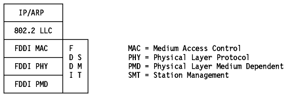

Table of Contents
Table of Contents  Example
ExampleThe FDDI specifications define a family of standards for 100 Mbps fiber optic LANs that provides the physical layer and media access control sublayer of the data link layer as defined by the ISO/OSI Model.
IP-FDDI is a draft standard protocol. Its status is elective. It defines the encapsulating of IP datagrams and ARP requests and replies in FDDI frames. Figure - IP and ARP over FDDI shows the related protocol layers.
It is defined in RFC 1188 - A Proposed Standard for the Transmission of IP Datagrams over FDDI Networks for single MAC stations. Operation on dual MAC stations will be described in a forthcoming RFC.
RFC 1188 states that all frames are transmitted in standard IEEE 802.2 LLC Type 1 Unnumbered Information format, with the DSAP and SSAP fields of the 802.2 header set to the assigned global SAP value for SNAP (decimal 170). The 24-bit Organization Code in the SNAP header is set to zero, and the remaining 16 bits are the EtherType from Assigned Numbers (see RFC 1340), that is:
The mapping of 32-bit Internet addresses to 48-bit FDDI addresses is done via the ARP dynamic discovery procedure. The broadcast Internet addresses (whose <host address> is set to all ones) are mapped to the broadcast FDDI address (all ones).
IP datagrams are transmitted as series of 8-bit bytes using the usual TCP/IP transmission order called "big-endian" or "network byte order".
The FDDI MAC specification (ISO 9314-2 - ISO, Fiber Distributed Data Interface - Media Access Control) defines a maximum frame size of 4500 bytes for all frame fields. After taking the LLC/SNAP header into account, and to allow future extensions to the MAC header and frame status fields, the MTU of FDDI networks is set to 4532 bytes.
Please refer to LAN Concepts and Products, GG24-3178 for more details
on the FDDI architecture.

Figure: IP and ARP over FDDI
TCP/IP for MVS, TCP/IP for VM, and TCP/IP for AIX/ESA all support the FDDI Controller.
AIX/6000 supports FDDI connectivity through the RISC System/6000 Fiber Distributed Data Interface (FDDI) and the RISC System/6000 Serial Optical Channel Converter (SOCC) adapters.
 Serial
Line IP (SLIP)
Serial
Line IP (SLIP)